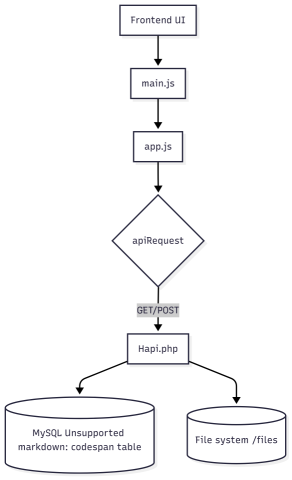

A technical walkthrough of the architecture, API workflow, and rendering logic behind FileForce’s frontend and backend integration.
/docs
.nojekyll is present to prevent GitHub
Pages from ignoring files and folders like img/
https://quanttrain.com/herzing/Hapi.php, served
via CORS
Code summary:
app.js provides async wrappers around
Hapi.php (resides on a private server, connects GitHub to a private MySQL database) actions:
uploadFile() → POST with FormDatadownloadFile() → GET with as_attachment=trueviewFile() → GET inline downloadrenameFile() → POST with JSON bodyfetchAllFiles() → GET for listingdeleteFile() → POST with file id
main.js drives dynamic rendering:
fetchAllFiles()
sortFiles() using
sortField and sortDirection
showStatus()
This SQL schema defines the backend table
files used by Hapi.php for metadata
storage:
CREATE TABLE `files` (
`id` int(11) NOT NULL AUTO_INCREMENT,
`name` varchar(255) NOT NULL,
`type` varchar(50) NOT NULL,
`created_at` timestamp NOT NULL DEFAULT CURRENT_TIMESTAMP,
`file_path` varchar(255) NOT NULL,
PRIMARY KEY (`id`)
);
Referenced from FileForce-create-table.sql in the
/docs directory.
The FileForce application integrates multiple layers to create a seamless in-browser file management system. Here’s how its components interact:
index.html, which includes a drag-and-drop upload zone, a sortable file table, and action buttons (View, Download, Delete, Rename). This page is the user’s entry point.
main.js takes over:
fetchAllFiles()app.js based on user inputuploadFile(), deleteFile(), and renameFile()fetch() to communicate with Hapi.phpas_attachment=true or JSON payloadsapp.js and executes server-side actions:
files table)/files directoryfiles SQL table/filesHapi.php sends back a JSON payload to app.js, which returns it to main.js. The UI is then updated to reflect the result—whether that's a new file appearing, an item being renamed, or a file removed.